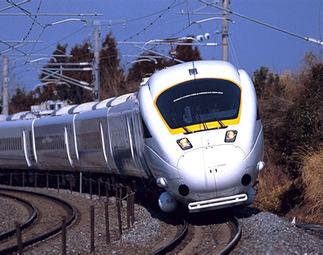
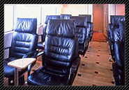

유선형의 둥글고 우아한 외관의 ‘시로이 카모메(白いかもめ)’
하카타(博多)~나가사키(長崎) 구간을 운행하는 ‘카모메’의 실내공간은 일본식 모던 분위기로 디자인되어 있습니다. 바닥은 원목으로 되어있으며, 승객의 안락한 열차여행을 위해 좌석은 천연가죽 시트로 되어있어 고급스러운 분위기를 자아냅니다. 요시노가리(吉野ケ里) 유적, 푸르름 가득한 들판과 사가(佐賀)평야 등 사가 지역의 명소를 비롯하여, 아리아케카이(有明海) 해안, 후겐다케(普賢岳) 산의 풍경 등 ‘카모메’열차에서만 볼 수 있는 멋진 풍경 또한 큰 매력입니다.
운행구간 : 하카타(博多)～사가(佐賀)∙히젠카시마(肥前鹿島)∙나가사키(長崎)
차내시설
‘시로이 카모메(白いかもめ)’차내

고급스러운 검정색 하이백시트, 팔걸이에 설치된 백목(白木) 테이블 등 기존의 열차에서는 볼 수 없었던 안락함을 선사합니다.
시트를 돌려 가족, 친구와 함께 마주 앉아 갈 경우, 각 시트의 테이블을 꺼내면 보다 큰 하나의 테이블로 이용할 수 있습니다.
차량마다 디자인을 달리한 공용시설도 하나의 즐거움입니다. 2호 차량에는 곡선 벽면을 활용한 아트갤러리가 있습니다.
■ 차내판매∙그린차량(특실차량) 서비스 안내
차내판매 및 그린차량(특실차량) 서비스가 제공되지 않는 열차가 있습니다. 자세한 내용은 관련페이지에서 확인할 수 있습니다.